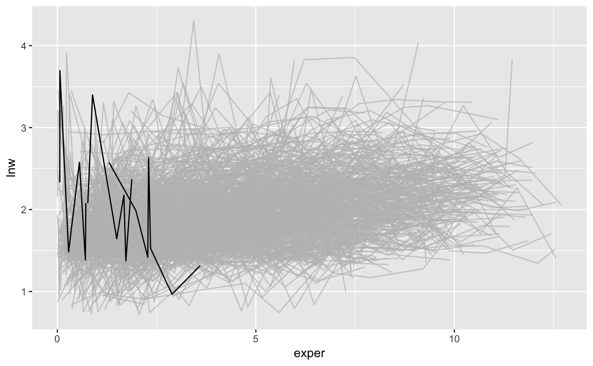

brolgar.RmdThe package brolgar contains some tools for analyzing longitudinal data which are not currently standard practice. Longitudinal data has subjects who are measured on several characteristics repeatedly through time but not always at the same time points or the same number of times. In our example we show how you can extract informative individual patterns of the data by concentrating on different statistics. A story can be woven that may be relevant rather than speaking in generalities.
The wages data set analysed in Singer & Willett (2003) will be used to demonstrate some of the capabilities of this package.
brolgar has tools for providing statistical summaries for each individual for measured characteristics. It is then possible to extract the subjects who possess certain properties and gain some insight into the data.
library(dplyr)
library(brolgar)
data(wages)
wages %>% print(10)
#> # A tibble: 6,402 x 9
#> id lnw exper ged postexp black hispanic hgc uerate
#> <int> <dbl> <dbl> <int> <dbl> <int> <int> <int> <dbl>
#> 1 31 1.49 0.015 1 0.015 0 1 8 3.21
#> 2 31 1.43 0.715 1 0.715 0 1 8 3.21
#> 3 31 1.47 1.73 1 1.73 0 1 8 3.21
#> 4 31 1.75 2.77 1 2.77 0 1 8 3.3
#> 5 31 1.93 3.93 1 3.93 0 1 8 2.89
#> 6 31 1.71 4.95 1 4.95 0 1 8 2.49
#> 7 31 2.09 5.96 1 5.96 0 1 8 2.6
#> 8 31 2.13 6.98 1 6.98 0 1 8 4.8
#> 9 36 1.98 0.315 1 0.315 0 0 9 4.89
#> 10 36 1.80 0.983 1 0.983 0 0 9 7.4
#> # … with 6,392 more rowslibrary(ggplot2)
library(gghighlight)
sl <- l_slope(wages, id, lnw~exper)
ns <- l_n_obs(wages, id)
wages_lg <- wages %>%
left_join(sl, by = "id") %>%
left_join(ns, by = "id")
wages_lg %>%
filter(l_n_obs > 5) %>%
ggplot(aes(x = exper,
y = lnw,
group = id)) +
geom_line() +
gghighlight(l_slope_exper < (-0.5),
use_direct_label = FALSE)